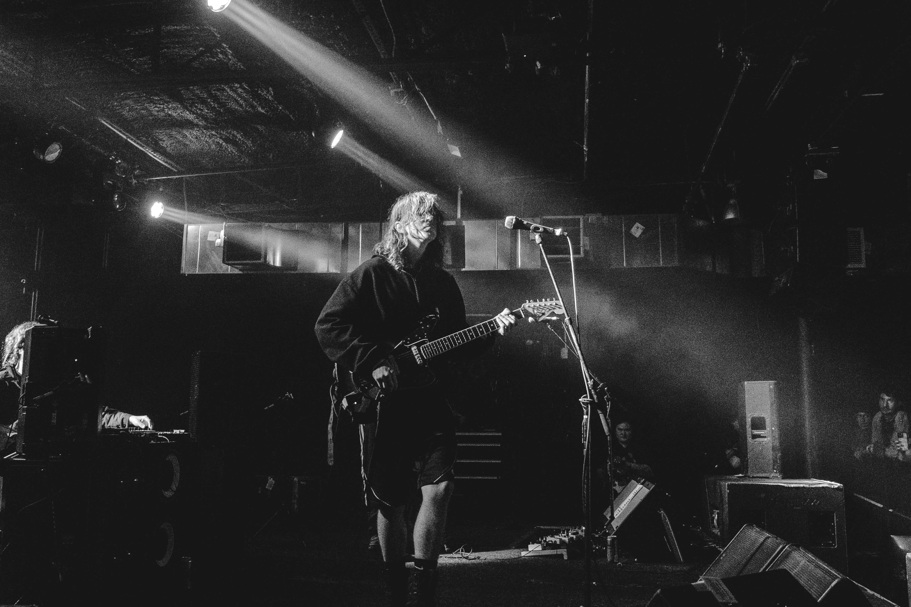

.jpeg)
Always Room to Grow
Mk.gee (pronounced "McGee"), born Michael Gordon, is an American singer, songwriter, multi-instrumentalist, and producer known for his genre-blending sound, understated charisma, and introspective songwriting. Emerging from the vibrant Los Angeles indie scene, Mk.gee has steadily built a reputation for crafting emotionally rich, sonically layered music that draws from R&B, experimental pop, funk, rock, and electronic textures. His style is hard to pin down—fluid, futuristic, and deeply personal—positioning him as one of the most exciting and innovative new voices in contemporary music.
Mk.gee grew up in New Jersey, where he was immersed in music from a young age. He started learning guitar in his early teens, influenced heavily by classic rock, funk, and soul. As his tastes broadened, he began exploring jazz and electronic music, eventually teaching himself production while studying at USC's Thornton School of Music. This blend of technical skill and curiosity laid the groundwork for his genre-crossing style and DIY approach to recording.
Mg.kee's tone is marked by a warm, saturated guitar sound that blends vintage textures with a modern, emotive edge. Often using clean or mildly overdriven settings layered with modulation effects like chorus or tremolo, his playing creates a lush, atmospheric quality that feels both intimate and expansive. Whether he's delivering delicate chord voicings or textural lead lines, mg.kee's tone serves the emotion of the song—never flashy, but always expressive, subtle, and carefully crafted to sit perfectly within the mood of his production.